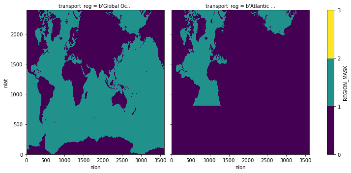

POP MOC(sig2) for 0.1-degree
Contents
POP MOC(sig2) for 0.1-degree#
Input Data: Model Output
Output Data: AMOC sigma 2 diagnostics
Description: Computes MOC(sig2) offline from POP history files using simple xhistogram binning.
Date: February 2023
Creator: Steve Yeager (https://github.com/sgyeager/POP_MOC/blob/main/notebooks/pop_MOCsig2_0.1deg.ipynb)
Updated: Teagan King, February 2023
%load_ext autoreload
%autoreload 2
import xarray as xr
import numpy as np
import cftime
import dask
from xhistogram.xarray import histogram
import pop_tools
import matplotlib.pyplot as plt
%matplotlib inline
from MOCutils import popmoc
import dask
from dask.distributed import wait
dask.__version__
'2021.09.0'
Start Dask Cluster#
# Close out Dask Cluster and release workers:
cluster.close()
client.close()
---------------------------------------------------------------------------
NameError Traceback (most recent call last)
/glade/scratch/yeager/tmp/ipykernel_220860/2583540064.py in <module>
1 # Close out Dask Cluster and release workers:
----> 2 cluster.close()
3 client.close()
NameError: name 'cluster' is not defined
# TODO: optimize dask resources
def get_ClusterClient():
import dask
from dask_jobqueue import PBSCluster
from dask.distributed import Client
cluster = PBSCluster(
cores=1,
memory='50GB',
processes=1,
queue='casper',
resource_spec='select=1:ncpus=1:mem=50GB',
project='NCGD0011',
walltime='03:00:00',
interface='ib0',)
dask.config.set({
'distributed.dashboard.link':
'https://jupyterhub.hpc.ucar.edu/stable/user/{USER}/proxy/{port}/status'
})
client = Client(cluster)
return cluster, client
cluster, client = get_ClusterClient()
cluster.scale(35)
cluster
1. Read in OGCM history file & MOC template file#
def time_set_midmonth(ds, time_name, deep=False):
"""
Return copy of ds with values of ds[time_name] replaced with mid-month
values (day=15) rather than end-month values.
"""
#ds_out = ds.copy(deep)
year = ds[time_name].dt.year
month = ds[time_name].dt.month
year = xr.where(month==1,year-1,year)
month = xr.where(month==1,12,month-1)
nmonths = len(month)
newtime = [cftime.DatetimeNoLeap(year[i], month[i], 15) for i in range(nmonths)]
ds[time_name] = newtime
return ds
def preprocessor(ds0):
keepvars = ['UVEL','VVEL','TEMP','SALT']
d0 = ds0[keepvars]
d0 = time_set_midmonth(d0,'time')
#d0 = d0.groupby('time.year').mean('time').rename({'year':'time'})
return d0
# fdir = '/glade/campaign/cgd/oce/people/whokim/csm/g.e21.GRYF_0304.TL319_t13.003/ocn/hist/'
fdir = '/glade/campaign/collections/cmip/CMIP6/iHESP/BHIST/HR/B.E.13.BHISTC5.ne120_t12.sehires38.003.sunway/ocn/proc/tseries/month_1/'
# TODO: this script takes *history* files as input
# TODO: loop through file years?
fin = fdir + 'g.e21.GRYF_0304.TL319_t13.003.pop.h.0060-??.nc'
ds = xr.open_mfdataset(fin,combine='by_coords',
preprocess=preprocessor,chunks={'time':1,'nlat':200},
coords="minimal",compat="override",data_vars="minimal",
parallel=True,)
fgrd = '/glade/work/whokim/grid/POP.TL319_t13.grid.nc'
ds_grid = xr.open_dataset(fgrd)
fmoc = '/glade/u/home/yeager/analysis/python/POP_MOC/moc_template.nc'
ds_moctemp = xr.open_dataset(fmoc)
%%time
dz = ds_grid['dz'].persist() / 100.
kmt = ds_grid['KMT'].fillna(0).persist()
dzt,dzu = popmoc.tx0p1v3_dztdzu(dz,kmt)
CPU times: user 9.02 s, sys: 5.65 s, total: 14.7 s
Wall time: 15.4 s
2. Compute sigma-2 field from POP model output#
# Get model T & S
salt = ds['SALT']
temp = ds['TEMP']
%%time
refz = 2000
refdep = xr.full_like(ds['z_t'],refz).rename('REFDEP')
# Sigma2 on model TLAT, TLONG
sigma2_T = pop_tools.eos(salt=salt,temp=temp,depth=refdep) - 1000
sigma2_T = sigma2_T.assign_attrs({'long_name':'Sigma referenced to {}m'.format(refz),'units':'kg/m^3'})
CPU times: user 29.2 s, sys: 5.11 s, total: 34.3 s
Wall time: 36 s
sigma2_T
<xarray.DataArray 'density' (time: 12, z_t: 62, nlat: 2400, nlon: 3600)>
dask.array<sub, shape=(12, 62, 2400, 3600), dtype=float32, chunksize=(1, 62, 200, 3600), chunktype=numpy.ndarray>
Coordinates:
* time (time) object 0060-01-15 00:00:00 ... 0060-12-15 00:00:00
* z_t (z_t) float32 500.0 1.5e+03 2.5e+03 ... 5.625e+05 5.875e+05
ULONG (nlat, nlon) float64 dask.array<chunksize=(200, 3600), meta=np.ndarray>
ULAT (nlat, nlon) float64 dask.array<chunksize=(200, 3600), meta=np.ndarray>
TLONG (nlat, nlon) float64 dask.array<chunksize=(200, 3600), meta=np.ndarray>
TLAT (nlat, nlon) float64 dask.array<chunksize=(200, 3600), meta=np.ndarray>
Dimensions without coordinates: nlat, nlon
Attributes:
long_name: Sigma referenced to 2000m
units: kg/m^33. Define target sigma-2 vertical grid#
Use a predefined target grid, or create your own!
# Use predefined 86-layer sigma2 grid:
sigma_mid,sigma_edge = popmoc.sigma2_grid_86L()
sigma_mid
<xarray.DataArray (sigma: 86)>
array([28. , 28.2 , 28.4 , 28.6 , 28.8 , 29. , 29.2 , 29.4 , 29.6 ,
29.8 , 30. , 30.2 , 30.4 , 30.6 , 30.8 , 31. , 31.2 , 31.4 ,
31.6 , 31.8 , 32. , 32.2 , 32.4 , 32.6 , 32.8 , 33. , 33.2 ,
33.4 , 33.6 , 33.8 , 34. , 34.2 , 34.4 , 34.6 , 34.8 , 35. ,
35.1 , 35.2 , 35.3 , 35.4 , 35.5 , 35.6 , 35.7 , 35.8 , 35.9 ,
36. , 36.05, 36.1 , 36.15, 36.2 , 36.25, 36.3 , 36.35, 36.4 ,
36.45, 36.5 , 36.55, 36.6 , 36.65, 36.7 , 36.75, 36.8 , 36.85,
36.9 , 36.95, 37. , 37.05, 37.1 , 37.15, 37.2 , 37.25, 37.3 ,
37.35, 37.4 , 37.45, 37.5 , 37.55, 37.6 , 37.65, 37.7 , 37.75,
37.8 , 37.85, 37.9 , 37.95, 38. ])
Coordinates:
* sigma (sigma) float64 28.0 28.2 28.4 28.6 28.8 ... 37.85 37.9 37.95 38.0
Attributes:
long_name: Sigma2 at middle of layer
units: kg/m^3sigma_edge
<xarray.DataArray (sigma: 87)>
array([ 0. , 28.1 , 28.3 , 28.5 , 28.7 , 28.9 , 29.1 , 29.3 ,
29.5 , 29.7 , 29.9 , 30.1 , 30.3 , 30.5 , 30.7 , 30.9 ,
31.1 , 31.3 , 31.5 , 31.7 , 31.9 , 32.1 , 32.3 , 32.5 ,
32.7 , 32.9 , 33.1 , 33.3 , 33.5 , 33.7 , 33.9 , 34.1 ,
34.3 , 34.5 , 34.7 , 34.9 , 35.05 , 35.15 , 35.25 , 35.35 ,
35.45 , 35.55 , 35.65 , 35.75 , 35.85 , 35.95 , 36.025, 36.075,
36.125, 36.175, 36.225, 36.275, 36.325, 36.375, 36.425, 36.475,
36.525, 36.575, 36.625, 36.675, 36.725, 36.775, 36.825, 36.875,
36.925, 36.975, 37.025, 37.075, 37.125, 37.175, 37.225, 37.275,
37.325, 37.375, 37.425, 37.475, 37.525, 37.575, 37.625, 37.675,
37.725, 37.775, 37.825, 37.875, 37.925, 37.975, 50. ])
Coordinates:
* sigma (sigma) float64 0.0 28.1 28.3 28.5 28.7 ... 37.87 37.92 37.97 50.0
Attributes:
long_name: Sigma2 at edges of layer
units: kg/m^34. Compute Isopycnal Layer Thickness (Can skip if not needed)#
%%time
# Here, test histogram by counting cells in each density bin. Vertical sum should be same as KMT.
iso_count = histogram(sigma2_T, bins=[sigma_edge.values],dim=['z_t'],density=False)
iso_count = iso_count.rename({'density_bin':'sigma'}).assign_coords({'sigma':sigma_mid})
kmtdiff = iso_count.sum('sigma') - ds_grid['KMT']
print("Max difference from true KMT = {}".format(abs(kmtdiff).max().values))
Max difference from true KMT = 0.0
CPU times: user 5.17 s, sys: 286 ms, total: 5.45 s
Wall time: 26.6 s
%%time
# Use histogram to compute layer thickness. Vertical sum should be same as HT.
iso_thick = histogram(sigma2_T, bins=[sigma_edge.values], weights=dzt,dim=['z_t'],density=False)
iso_thick = iso_thick.rename({'density_bin':'sigma'}).assign_coords({'sigma':sigma_mid})
iso_thick = iso_thick.rename('iso_thick').assign_attrs({'units':'m','long_name':'Isopycnal Layer Thickness'}).rename({'sigma':'sigma_mid'})
iso_thick = iso_thick.transpose('time','sigma_mid','nlat','nlon')
htdiff = iso_thick.sum('sigma_mid') - (ds_grid['HT']/100.).assign_attrs({'units':'m'})
print("Max difference from true HT = {}m".format(abs(htdiff).max().values))
Max difference from true HT = 0.0008862500008035568m
CPU times: user 11 s, sys: 2.66 s, total: 13.7 s
Wall time: 30.8 s
5. Compute Isopycnal Layer Depth (Can skip if not needed)#
# Cumulative sum of layer thickness yields depth of layer edges:
iso_depth = iso_thick.cumsum('sigma_mid').rename('iso_depth').rename({'sigma_mid':'sigma_bot'}).assign_attrs({'units':'m','long_name':'Isopycnal Layer Depth'})
sigma_bot = sigma_edge.isel(sigma=slice(1,None)).rename({'sigma':'sigma_bot'}).assign_attrs({'long_name':'Sigma2 at bottom of layer'})
iso_depth['sigma_bot'] = sigma_bot
iso_depth = iso_depth.transpose('time','sigma_bot','nlat','nlon')
iso_depth
<xarray.DataArray 'iso_depth' (time: 12, sigma_bot: 86, nlat: 2400, nlon: 3600)>
dask.array<nancumsum, shape=(12, 86, 2400, 3600), dtype=float32, chunksize=(1, 86, 200, 720), chunktype=numpy.ndarray>
Coordinates:
* time (time) object 0060-01-15 00:00:00 ... 0060-12-15 00:00:00
* sigma_bot (sigma_bot) float64 28.1 28.3 28.5 28.7 ... 37.92 37.97 50.0
Dimensions without coordinates: nlat, nlon
Attributes:
units: m
long_name: Isopycnal Layer Depthxarray.DataArray
'iso_depth'
- time: 12
- sigma_bot: 86
- nlat: 2400
- nlon: 3600
- dask.array<chunksize=(1, 86, 200, 720), meta=np.ndarray>
Array Chunk Bytes 33.22 GiB 47.24 MiB Shape (12, 86, 2400, 3600) (1, 86, 200, 720) Count 8948 Tasks 720 Chunks Type float32 numpy.ndarray - time(time)object0060-01-15 00:00:00 ... 0060-12-...
array([cftime.DatetimeNoLeap(60, 1, 15, 0, 0, 0, 0, has_year_zero=True), cftime.DatetimeNoLeap(60, 2, 15, 0, 0, 0, 0, has_year_zero=True), cftime.DatetimeNoLeap(60, 3, 15, 0, 0, 0, 0, has_year_zero=True), cftime.DatetimeNoLeap(60, 4, 15, 0, 0, 0, 0, has_year_zero=True), cftime.DatetimeNoLeap(60, 5, 15, 0, 0, 0, 0, has_year_zero=True), cftime.DatetimeNoLeap(60, 6, 15, 0, 0, 0, 0, has_year_zero=True), cftime.DatetimeNoLeap(60, 7, 15, 0, 0, 0, 0, has_year_zero=True), cftime.DatetimeNoLeap(60, 8, 15, 0, 0, 0, 0, has_year_zero=True), cftime.DatetimeNoLeap(60, 9, 15, 0, 0, 0, 0, has_year_zero=True), cftime.DatetimeNoLeap(60, 10, 15, 0, 0, 0, 0, has_year_zero=True), cftime.DatetimeNoLeap(60, 11, 15, 0, 0, 0, 0, has_year_zero=True), cftime.DatetimeNoLeap(60, 12, 15, 0, 0, 0, 0, has_year_zero=True)], dtype=object) - sigma_bot(sigma_bot)float6428.1 28.3 28.5 ... 37.92 37.97 50.0
- long_name :
- Sigma2 at bottom of layer
- units :
- kg/m^3
array([28.1 , 28.3 , 28.5 , 28.7 , 28.9 , 29.1 , 29.3 , 29.5 , 29.7 , 29.9 , 30.1 , 30.3 , 30.5 , 30.7 , 30.9 , 31.1 , 31.3 , 31.5 , 31.7 , 31.9 , 32.1 , 32.3 , 32.5 , 32.7 , 32.9 , 33.1 , 33.3 , 33.5 , 33.7 , 33.9 , 34.1 , 34.3 , 34.5 , 34.7 , 34.9 , 35.05 , 35.15 , 35.25 , 35.35 , 35.45 , 35.55 , 35.65 , 35.75 , 35.85 , 35.95 , 36.025, 36.075, 36.125, 36.175, 36.225, 36.275, 36.325, 36.375, 36.425, 36.475, 36.525, 36.575, 36.625, 36.675, 36.725, 36.775, 36.825, 36.875, 36.925, 36.975, 37.025, 37.075, 37.125, 37.175, 37.225, 37.275, 37.325, 37.375, 37.425, 37.475, 37.525, 37.575, 37.625, 37.675, 37.725, 37.775, 37.825, 37.875, 37.925, 37.975, 50. ])
- units :
- m
- long_name :
- Isopycnal Layer Depth
iso_depth.isel(time=0,sigma_bot=84).plot(size=6,vmax=5500)
<matplotlib.collections.QuadMesh at 0x2b870205fca0>
%%time
# Isopycnal depth of bottom-most layer should be same as HT.
htdiff = iso_depth.isel(sigma_bot=-1) - (ds_grid['HT']/100.).assign_attrs({'units':'m'})
print("Max difference from true HT = {}m".format(abs(htdiff).max().values))
Max difference from true HT = 0.0008469375015920377m
6. Compute Isopycnal Layer Horizontal Volume Flux#
## Grid Metrics
dxu = ds_grid['DXU']
dyu = ds_grid['DYU']
dxt = ds_grid['DXT']
dyt = ds_grid['DYT']
u_e = ds['UVEL']
u_e = u_e.where(u_e<1.e30,0)
v_e = ds['VVEL']
v_e = v_e.where(v_e<1.e30,0)
%%time
# Grid-oriented Volume FLuxes:
u_e = (u_e*dyu*dzu/1.e4).assign_attrs({'units':'m^3/s'})
v_e = (v_e*dxu*dzu/1.e4).assign_attrs({'units':'m^3/s'})
CPU times: user 13.1 s, sys: 1.46 s, total: 14.6 s
Wall time: 33.9 s
%%time
# Convert u_e,v_e to C-grid fluxes
u = 0.5*(u_e+u_e.shift(nlat=1))
v = 0.5*(v_e+v_e.roll(nlon=1,roll_coords=False))
CPU times: user 23.7 ms, sys: 943 µs, total: 24.7 ms
Wall time: 75 ms
%%time
# Volume fluxes in density-space.
iso_uflux = histogram(sigma2_T, bins=[sigma_edge.values],weights=u,dim=['z_t'],density=False)
iso_uflux = iso_uflux.rename({'density_bin':'sigma'}).assign_coords({'sigma':sigma_mid})
iso_vflux = histogram(sigma2_T, bins=[sigma_edge.values],weights=v,dim=['z_t'],density=False)
iso_vflux = iso_vflux.rename({'density_bin':'sigma'}).assign_coords({'sigma':sigma_mid})
CPU times: user 13.7 ms, sys: 16 µs, total: 13.7 ms
Wall time: 13.7 ms
%%time
iso_uflux = iso_uflux.persist()
daskout = wait(iso_uflux)
CPU times: user 11.2 s, sys: 1.9 s, total: 13.1 s
Wall time: 53.5 s
%%time
iso_vflux = iso_vflux.persist()
daskout = wait(iso_vflux)
CPU times: user 10.1 s, sys: 1.83 s, total: 11.9 s
Wall time: 47.6 s
%%time
# Vertical sum in density-space should reproduce vertical sum in depth-space
ufluxdiff = iso_uflux.isel(time=0).sum('sigma') - u.isel(time=0).sum('z_t')
print("Max difference from true Uflux = {}".format(abs(ufluxdiff).max().values))
vfluxdiff = iso_vflux.isel(time=0).sum('sigma') - v.isel(time=0).sum('z_t')
print("Max difference from true Vflux = {}".format(abs(vfluxdiff).max().values))
Max difference from true Uflux = 7.450580596923828e-09
Max difference from true Vflux = 7.450580596923828e-09
CPU times: user 2.29 s, sys: 3.17 s, total: 5.46 s
Wall time: 12.3 s
7. Compute Vertical Volume Flux from horizontal flux convergence#
%%time
wflux = popmoc.wflux(iso_uflux,iso_vflux,'sigma',sigma_edge,grid='C')
wflux = wflux.assign_coords({'TLAT':ds['TLAT'],'TLONG':ds['TLONG']}).drop(['ULAT','ULONG'])
CPU times: user 25.6 ms, sys: 147 µs, total: 25.7 ms
Wall time: 26.3 ms
%%time
wflux = wflux.persist()
daskout = wait(wflux)
CPU times: user 4 s, sys: 103 ms, total: 4.1 s
Wall time: 17.2 s
8. Define MOC region masks#
## Define the MOC region mask:
rmask = ds_grid.REGION_MASK.drop(['ULONG','ULAT'])
rmaskglob = xr.where((rmask>0),1,0)
rmaskatl = xr.where((rmask>=6) & (rmask<=11),1,0)
rmaskmoc = xr.concat([rmaskglob,rmaskatl],dim=ds_moctemp.transport_regions)
rmaskmoc.plot(levels=[0,1,2,3],col='transport_reg',size=5);

9. Compute MOC#
%%time
MOC = popmoc.compute_MOC(wflux,rmaskmoc,ds_moctemp.lat_aux_grid)
MOC = MOC.transpose('time','transport_reg','sigma','lat_aux_grid')
CPU times: user 473 ms, sys: 203 ms, total: 676 ms
Wall time: 701 ms
%%time
MOC = MOC.load()
#daskout = wait(MOC)
CPU times: user 5.21 s, sys: 280 ms, total: 5.49 s
Wall time: 28 s
10. Add Southern Boundary Fluxes for Atlantic Region#
# determine j=index of Atlantic region southern boundary
tmp = rmaskmoc.isel(transport_reg=1).sum('nlon')
atl_j = 0
j = 0
while (atl_j==0):
if (tmp.isel(nlat=j).data>0):
atl_j = j
j += 1
atl_j = atl_j - 1
atl_j
809
%%time
# add vflux at southern boundary of Atlantic domain
tmp = iso_vflux*(rmaskmoc.shift(nlat=-1))
tmp = tmp.isel(nlat=atl_j,transport_reg=1).sum('nlon')
moc_s = -tmp.sortby('sigma',ascending=False).cumsum('sigma').sortby('sigma',ascending=True)/1.e6
moc_s['sigma'] = sigma_edge.isel(sigma=slice(0,-1))
MOC[{'transport_reg':1}] = MOC[{'transport_reg':1}] + moc_s
CPU times: user 871 ms, sys: 211 ms, total: 1.08 s
Wall time: 2.8 s
MOC.isel(time=0).isel(transport_reg=0).plot(ylim=[40,28])
<matplotlib.collections.QuadMesh at 0x2b060210e760>
MOC.isel(time=0).isel(transport_reg=1).plot(ylim=[40,28])
<matplotlib.collections.QuadMesh at 0x2b06040188b0>
11. Save to netcdf#
MOCann = MOC.groupby('time.year').mean('time').rename({'year':'time'})
dsout = MOCann.to_dataset()
fout = '/glade/scratch/tking/MOCsig2.nc'
dsout.to_netcdf(fout,unlimited_dims='time')